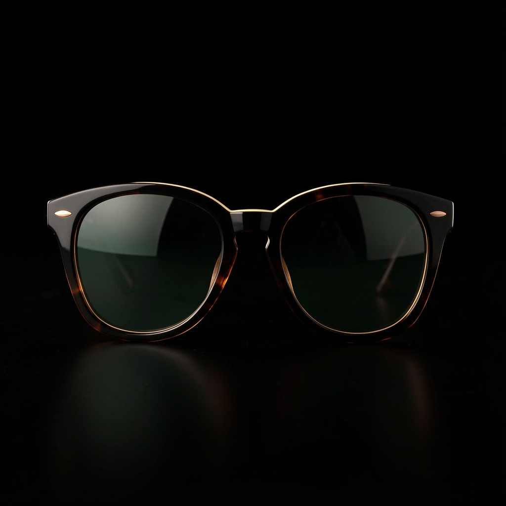

Post 01assets/legacy_optical_noir_post_01.png
ForgeGraph client handoff
Paquete armado desde el prompt operativo, con estrategia, contenido, assets, medición, QA y evidencia de linaje listos para aprobación. No se afirma publicación en vivo: el lanzamiento queda condicionado a aprobación y conectores reales.
Approval checkpoint
Artifact Index
Engagement, whiteboard, asset checksums, source deliverables, and media provenance are archived in manifest.json. The visible handoff keeps internal IDs out of client copy.
No Markdown files included.
Assets



Codex Strategy Brief
Client: Legacy Engagement: Legacy weekend marketing sprint Purpose: Establish the strategic foundation for a client-ready weekend social launch package routed through Strategy, Brand, Channel, CRM, Analytics, QA, and Client Approval.
Legacy Optical Noir should launch as a premium, social-first weekend campaign that uses noir styling to make eyewear feel sharper, more cinematic, and more intentional. The campaign should not read as “dark for style’s sake.” Noir is relevant because optical is fundamentally about light, shadow, focus, reflection, and contrast. Those same visual principles can make frames, lenses, faces, and brand details feel more distinctive in-feed.
The weekend rollout should be treated as a social publishing sequence, separate from operational logistics. The package should define what audiences see across social channels from Friday through Sunday, while logistics such as store staffing, delivery timing, event setup, inventory readiness, or production call sheets remain separate workstreams.
| Feedback Area | Strategic Response | |---|---| | Explain noir rationale | Noir is positioned as an optical-relevant visual system based on light, contrast, precision, and timeless style. | | Clarify weekend rollout vs logistics | The weekend plan is a social content cadence, not an operations plan. Logistics dependencies are called out separately. | | Require Legacy logo and brand presence | Every post, Story, Reel, carousel, and cutdown must include visible Legacy brand presence. | | QA weak images before delivery | Image quality gates are required before client review or final packaging. Weak, generic, muddy, or off-brand imagery should be revised or rejected. |
Launch Legacy Optical Noir as a memorable weekend social moment that increases brand recall, frames Legacy eyewear as premium and style-led, and gives audiences a clear next action: view the collection, book a visit, send a DM, or visit the store.
Primary audience: style-conscious optical customers who treat eyewear as part of personal presentation, not only vision correction.
Secondary audience: existing Legacy customers, weekend browsers, gift shoppers, and social followers who may need a prompt to re-engage with the brand.
Audience insight: eyewear decisions are visual and identity-driven. A high-contrast noir treatment helps the product feel considered, editorial, and emotionally specific while still keeping the frames at the center.
Noir works for Legacy Optical because it naturally connects to the language of vision.
Noir is built from controlled light, reflective surfaces, shadow, silhouette, sharp lines, and close-up detail. Those elements are also central to how eyewear is seen: lens reflection, frame shape, facial structure, eye contact, and clarity. Used correctly, the noir treatment makes the product feel precise and memorable rather than decorative.
The tone should be modern optical noir: polished, editorial, stylish, and restrained. Avoid clichés such as crime references, overly dark alley scenes, excessive smoke, obscured faces, or imagery where the eyewear becomes hard to see.
Campaign idea: Legacy Optical Noir Core message: See the weekend in sharper focus. Tone: Cinematic, refined, confident, slightly mysterious, never vague. CTA options: Shop the look, Book your fitting, Visit Legacy this weekend, DM us for frame details.
This rollout defines the social publishing sequence only. It does not define store operations, staffing, shipping, event setup, production logistics, or inventory management.
| Timing | Social Role | Recommended Asset | Message Focus | CTA | |---|---|---|---|---| | Friday evening | Launch the mood | Hero Reel or motion post | Introduce Legacy Optical Noir and the weekend visual world | View the collection | | Saturday morning | Product clarity | Carousel or detail-led post | Show hero frames, lens details, fit, and styling | Book a fitting | | Saturday evening | Social engagement | Stories with polls, close-ups, and frame choices | Invite audience preference and DM interaction | Vote / DM for details | | Sunday afternoon | Conversion push | Recap post or Story sequence | Bring the weekend moment back to action | Visit today / Book now | | Sunday evening | Final reminder | Branded Story or short Reel cutdown | Last chance to engage with the weekend feature | Save / DM / Book |
Every delivered asset must include Legacy brand presence. No post should be delivered as an unbranded noir mood image.
Minimum requirements:
The visual system should feel cinematic but product-clear.
Use:
Avoid:
Recommended weekend package:
Before delivery, each image should be reviewed against the following criteria:
| QA Area | Pass Standard | |---|---| | Product clarity | Eyewear is visible, sharp, and central to the composition. | | Brand presence | Legacy logo or approved brand mark is present and legible. | | Noir quality | Lighting feels intentional, not simply underexposed. | | Image strength | No weak stock feel, awkward crop, blur, artifacts, or muddy contrast. | | Platform crop | Works in feed, Story, Reel cover, and thumbnail placements. | | Accessibility | Text is readable; contrast is sufficient; captions or alt text can be added. | | Client readiness | Asset feels premium enough for Legacy review without caveats. |
QA decision labels:
| Department | Responsibility | |---|---| | Strategy | Own campaign rationale, audience, message hierarchy, and rollout logic. | | Brand | Confirm logo usage, visual system, typography, color, and tone. | | Channel | Adapt assets by platform and schedule the weekend cadence. | | CRM | Align DMs, booking prompts, follow-up links, and customer response language. | | Analytics | Define KPIs, UTM structure, reporting window, and post-weekend readout. | | QA | Review brand presence, image quality, copy, accessibility, crops, and final package integrity. | | Client Approval | Confirm final creative, CTA, offer language, dates, and publishing readiness. |
Primary KPIs:
Recommended reporting window: Friday launch through Monday end-of-day, with a short Tuesday performance readout.
Client should approve:
Proceed with Legacy Optical Noir as a polished weekend social launch, provided the final creative keeps eyewear and Legacy branding clearly visible. The strongest version of the campaign will feel cinematic, but still commercially clear: beautiful enough to stop the scroll, branded enough to be unmistakably Legacy, and structured enough to drive weekend action.
Message House
Legacy Optical Noir Message House Strategic rationale: Optical Noir is a premium contrast system for product photography, not a literal night-use claim for sunglasses. Why it works: black, ivory, copper, and controlled reflections make frames and lenses feel sharper, more editorial, and easier to remember in-feed. Positioning: lujo usable para CDMX; editorial, sobrio, accesible-premium. Brand presence: every social post should carry a Legacy logo or approved brand mark treatment unless the client explicitly requests clean product-only assets. Primary CTA: revisar estilos y aprobar piezas antes de publicar. Tone: Spanish-first, concrete, low-hype, confident.
Crm Scripts
WhatsApp / DM scripts Disponibilidad: Te confirmo modelo/color y te comparto alternativas si ya se movió. Precio: Son piezas premium; te ayudo a elegir el par que mejor se vea y más uses. Cierre: ¿Quieres que te aparte este modelo o prefieres ver dos opciones más?
Measurement Plan
Track the weekend social rollout and posting cadence: post saves, replies, profile visits, link clicks, DMs, holds, sold/blocked status, and next action every 24h. This is a posting and review cadence, not a shipping or fulfillment timeline unless the client provides logistics details. Hold live claims until connector evidence exists.
Channel Asset Map
Channel Asset Map
Qa Report
QA Report Media jobs succeeded: 6/6 Client package formats: HTML, PDF, PNG, JSON manifest, ZIP; no Markdown files. Policy: no live publishing claim; approval required before production launch. Decision: ready for review